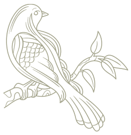

Hi there! I'm
Katie Liu
it's so nice to meet you!
About me
I'm Katie, an undergraduate at the University of Ottawa studying Computer Science. Aside from
learning algorithms and data structures, I'm currently taking this time to explore my areas of
interests. I've built this website so that I could both get a better grasp of the wonders of web
development, and of course, showcase my work to you!
When I'm not preoccupied with studying, I'm either watercolouring or reading up on the
latest webtoon updates.
My Projects
BookTracker
An application that recommends books based on the users' previous reading history and genre of choice.
Java
Reservanté
A restaurant table reservation program built for the 2020 cmd-f hackathon. Allows users to customize seating arrangements and time slots for customer booking.
Java
Javmos v2
The second iteration of my original graphing calculator, Javmos; a desktop application that takes after the advanced graphing calculator, Desmos. Graph functions ranging from polynomials and logarithms to trigonometric.
Java